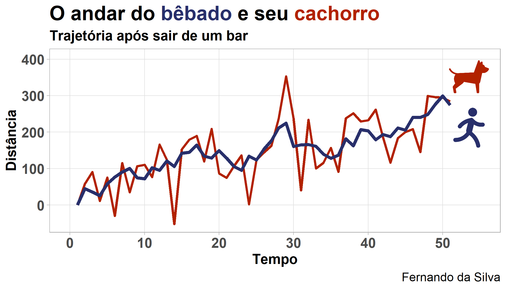

Muito utilizado no mercado financeiro para estratégias long-short, arbitragem estatística, pairs trading e em análise e previsão de séries temporais macroeconômicas, o conceito de cointegração é ao mesmo tempo fascinante e intimidador de se compreender. Por isso, neste breve texto iremos explicar o que é cointegração com um exemplo intuitivo e fazer um exercício simples aplicando o teste de cointegração de Engle-Granger com pares de ações brasileiras usando o R!
A analogia do bêbado e seu cachorro
As definições matemáticas de cointegração, e tópicos relacionados, são um tanto quanto sofisticadas, mas o seu conceito é simples o suficiente para ser introduzido com a cômica analogia do andar do bêbado e seu cachorro. Os créditos da analogia são inteiramente de Michael P. Murray que escreveu, em 1994, um paper didático de apenas 3 páginas elucidando o conceito de cointegração com o conto do andar do bêbado.
Imagine que você esteja andando na rua da sua cidade e aviste um bêbado que acaba de sair do bar, vagando em direção a sua casa. Você percebe que o bêbado caminha de maneira peculiar e imprevisível, algumas vezes se desviando para a esquerda e outras para a direita enquanto tenta, com dificuldades, seguir o seu caminho. Ao observar a trajetória do bêbado pode-se dizer que seus passos são nada mais do que uma sequência aleatória de passos. Na econometria, chamamos a trajetória do bêbado de passeio aleatório (random walk), de maneira a descrever o comportamento de muitas das séries econômicas que existem.
Por andar de forma aleatória, se você desviar o olhar e parar de observar o bêbado andando, será difícil dizer onde o bêbado estará após um determinado tempo, pois sua trajetória é imprevisível. Uma das características das trajetórias do tipo passeio aleatório, como a do bêbado, é de que a melhor previsão sobre um valor futuro é o último valor observado. Dessa forma, o seu palpite sobre a localização atual do bêbado poderia ser algo como o último lugar onde você o avistou, ou seja, na saída do bar.
Agora imagine que o bêbado tenha um cachorro amigo, sem coleira, que o acompanha. De forma similar ao bêbado, o cachorro também segue uma sequência aleatória de passos, sendo atraído por cada cheiro novo e estímulos que sente no caminho. Sempre que o bêbado percebe que o cachorro foi muito longe ele o chama: “Thor!”. E o cachorro obedece o chamado retornando para perto de seu dono, caracterizando assim uma correção da distância entre ambos.
Se fossemos representar por meio de um gráfico a trajetória do bêbado e do cachorro ao longo do tempo e em relação a um ponto de referência qualquer (como o bar), seria algo como:

Observando as trajetórias de ambos, pode-se dizer que mesmo que a localização atual do bêbado após um tempo seja imprevisível, a localização do cachorro é relativamente previsível, pois ele não se afastará muito do seu dono. Dessa forma, agora um bom palpite sobre a localização do bêbado, por exemplo, pode ser dado uma vez que você tenha encontrado o cachorro, e vice-versa, pois conforme seguem dando passos aleatórios também corrigem a distância entre ambos. Na econometria, chamamos isso formalmente de mecanismo de correção de erros.
Note, também, que ambas as trajetórias são o que chamamos de séries temporais não-estacionárias, dado que quanto mais tempo passa é mais provável que o bêbado e seu cachorro estejam vagando bem longe de onde foram vistos por último. Se for verdade que a distância entre eles seja corrigida por um mecanismo de correção de erros, então a distância entre as trajetórias é dita cointegrada de ordem zero.
Para entender o que a expressão cointegrada de ordem zero significa, vale primeiro entender o que são séries integradas. Séries temporais não-estacionárias que se tornam estacionárias quando diferenciadas n vezes são ditas integradas de ordem n ou, simplesmente, \(\text{I}(n)\). Para duas séries temporais serem cointegradas, cada série precisa ser integrada de mesma ordem, n; por isso o termo cointegração. Sendo assim, um conjunto de séries temporais, todas integradas de ordem n, são ditas cointegradas se e somente se alguma combinação linear das séries é integrada de ordem menor do que n. Tal combinação linear foi chamada de relação de cointegração, conforme o trabalho de Engle e Granger (1987).
Cointegração no sentido de Engle-Granger
De maneira um pouco mais formal, partindo de um modelo de passeio aleatório para as trajetórias do bêbado (\(x_t\)) e do cachorro (\(y_t\)), temos:
\[u_t = x_t - x_{t-1}\] \[w_t = y_t - y_{t-1}\]
onde \(u_t\) e \(w_t\) representam, respectivamente, o passeio aleatório do bêbado e do cachorro ao longo do tempo \(t\) e são ruído branco estacionários. Podemos então modelar a “trajetória cointegrada” do bêbado e do cachorro como:
\[u_t + c(y_{t-1} - x_{t-1}) = x_t - x_{t-1}\] \[w_t + d(x_{t-1} - y_{t-1}) = y_t - y_{t-1}\]
onde \(u_t\) e \(w_t\) são novamente os passeios aleatórios do bêbado e do cachorro e os termos adicionais no lado esquerdo das equações são os termos de correção de erro pelo quais o bêbado e o cachorro corrigem a distância um do outro, ou seja, permanecem próximos. Podemos então dizer que, das equações acima, \((y_{t-1} - x_{t-1})\) é uma relação de cointegração entre a trajetória do bêbado e do cachorro. Dessa forma, se estabelece uma relação de equilíbrio de longo prazo entre as trajetórias.
Note que se os termos de correção de erros forem não-estacionários, então as trajetórias modeladas para o bêbado e o cachorro também seriam não-estacionárias, portanto ambos iriam provavelmente se distanciar bastante ao longo do tempo. Nesse caso, diríamos que as séries temporais das trajetórias do bêbado e do cachorro não são cointegradas de ordem zero. No entanto, Engle e Granger (1987) provaram que se a trajetória do bêbado e do cachorro são ambas integradas de ordem 1 e seguem o descrito nas equações acima, então as trajetórias cointegram.
A analogia do bêbado e seu cachorro é uma boa forma de entender os conceitos básicos de cointegração e do mecanismo de correção de erro, no entanto, há inúmeros detalhes técnicos que devem ser considerados em aplicações com dados reais. Para se aprofundar mais no tema considere um curso de econometria de séries temporais.
O conceito de cointegração é bastante utilizado em exercícios de macroeconomia, mas também pode ser usado no mercado financeiro com o objetivo de identificar relações — como a do bêbado e seu cachorro — entre ativos e realizar operações lucrativas com a técnica. Um exemplo disso são as estratégias de pairs trading, onde se realiza operações com pares de ativos que apresentem relação de cointegração de modo a obter lucro com a arbitragem. O grande desafio dessa aplicação é encontrar o par de ativo que apresente essas características.
Teste de Cointegração de Engle-Granger
De maneira prática, para verificar se um conjunto de séries temporais \(y_t\) e \(x_t\) cointegram, é preciso seguir os procedimentos propostos por Engle e Granger (1987):
- Verificar se as séries são estacionárias;
- Estimar a regressão cointegrante das séries: \(y_t = \alpha + \beta x_t + \epsilon_t\);
- Verificar se o resíduo da regressão cointegrante é estacionário usando os valores críticos de Engle e Granger (1987);
- Se o resíduo for estacionário, a regressão cointegrante não é espúria e pode-se estimar um modelo de correção de erros para obter a relação de equilíbrio das séries.
A seguir mostraremos como aplicar o teste com um par de ações negociadas na B3 e para isso usaremos a linguagem R.
Exemplo no R
O exemplo utilizará o par de ações PETR3 e PETR4 no período de 28 de março de 2021 até 28 de março de 2022. Os dados são públicos e podem ser acessados pelo Yahoo Finance, havendo opção de usar pacotes ou web scraping para extrair os dados. O código abaixo faz a extração e tratamento de dados:
Antes de partir para o teste vale visualizar as séries temporais:
As séries parecem apresentar uma trajetória de passeio aleatório, como a do bêbado e seu cachorro, algo comum em séries de ativos financeiros.
Agora vamos para a primeira etada do teste de cointegração de Engle-Granger, ou seja, verificar se as séries são estacionárias. Podemos fazer isso com o teste ADF através da função adf.test():
Conforme os resultados, falhamos em rejeitar a hipótese nula do teste de a série ter raiz unitária, ou seja, as séries são não-estacionárias nos testes considerados (sem constante com tendência, com constante sem tendência e com constante e tendência).
Identificado que as séries são integradas de mesma ordem (nesse caso I(1), conforme pode ser confirmado usando a função forecast::ndiffs), podemos prosseguir com as etapas 2 e 3 que envolvem estimar a regressão cointegrante e verificar a estacionariedade do resíduo desta regressão. No R, isso tudo pode ser feito com a função coint.test(), que já toma o cuidado de usar os valores críticos corretos para testar os resíduos, conforme MacKinnon (1991).
Note que a função aplica 3 especificações: sem tendência, com tendência e com tendência quadrática. Em outros pacotes estatísticos e econométricos, como no Gretl, considera-se geralmente somente a primeira. Conforme os resultados, pelo p-valor da primeira especificação, sem tendência, temos que o resíduo da regressão cointegrante é estacionário, mas isso não se verifica para outras especificações. Em outras palavras, há evidências de que as séries PETR3 e PETR4 cointegram, para a amostra de dados selecionada e com base no teste sobre o resíduo sem tendência (se o resíduo apresentar tendência, outro tipo do teste deve ser considerado).
Referências
Abordamos brevemente o conceito de cointegração de séries temporais no sentido de Engle-Granger. Há vários buracos deixados ao longo do texto que precisam de mais espaço e conhecimentos prévios para serem preenchidos. Espero poder abordar outros desses tópicos sobre séries temporais adiante, mas por enquanto aproveite para conferir abaixo os trabalhos citados.
Engle, R. F., & Granger, C. W. (1987). Co-integration and error correction: representation, estimation, and testing. Econometrica: journal of the Econometric Society, 251-276.
MacKinnon, J. G. (1991). Critical values for cointegration tests, Ch. 13 in Long-run Economic Relationships: Readings in Cointegration, eds. R. F. Engle and C. W. J. Granger, Oxford, Oxford University Press.
Murray, M. P. (1994). A drunk and her dog: an illustration of cointegration and error correction. The American Statistician, 48(1), 37-39.